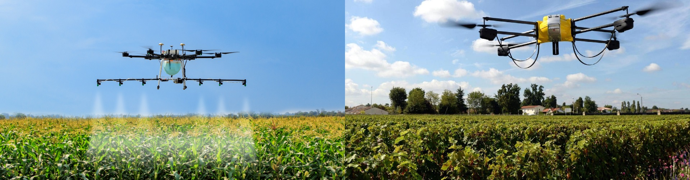
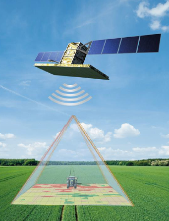
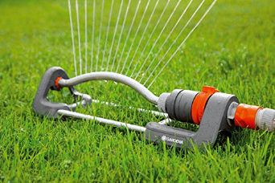
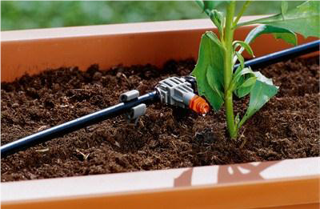

L’agriculture intelligente concerne l'application moderne des technologies de l'information et de la communication, dans ce chapitre nous donnerons une vue autour à l’agriculture intelligente à l’aide des capteurs et des appareilles électronique.
La digitalisation et notamment l’IOT permet aux agriculteurs et éleveurs une meilleure maitrise de leurs exploitations et de leurs troupeaux.
L’installation de capteurs dans les champs permet de recueillir et d’analyser des données transmises à l’agriculteur, en plus de conseils, qui l’aideront à améliorer sa prise de décision.
le drone permet une meilleure connaissance des champs et de leur état en temps réel . le drone permet d’optimiser l’utilisation d’eau, de pesticides, de prévenir un quelconque aléa et d’augmenter la rentabilité de l’exploitation. |
 |
GPS est une technologie dont on parle de plus en plus dans le monde agricole. L’agriculture de précision consiste à utiliser le positionnement GPS pour conduire les bonnes pratiques agronomiques à l’intérieur de chaque parcelle. |
 |
Arroseur oscillant : |
 |
|---|
System goutte à goutte : |
 |
|---|
Dans ce chapitre on a traité les besoins des plantes, comme aussi nous avons parlé des technologies modernes et avancées dans le domaine de l'agriculture. Parmi ces technologies: Internet Of Things, Drone et GPS…etc.